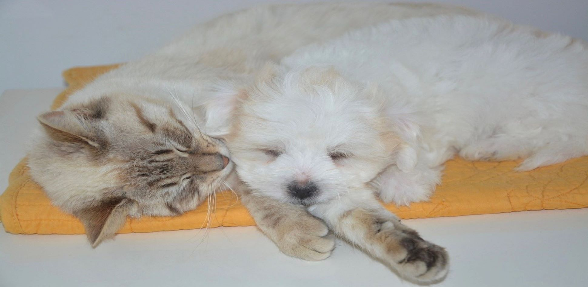
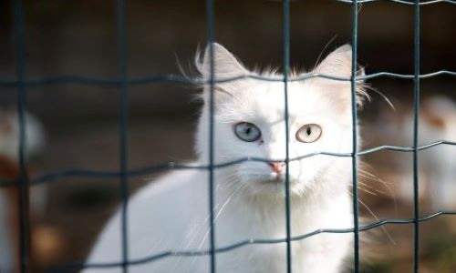
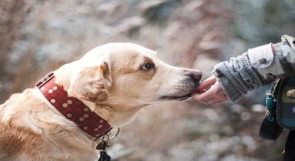

Making a new friends!


Every year, 6.5 million dogs, cats, and other former pets are abandoned or lost and enter shelters. But of all these animals, only 3.2 million are adopted and many see shelters again after less than a year of finding a new home. Let's make a new family member!

We provide rescue cats and dogs adoption event once a month and We do fund-raising for animals. We are always seeking community members who are willing to support the shelter. Learn more.